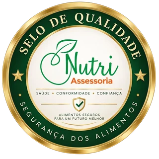
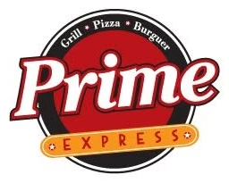
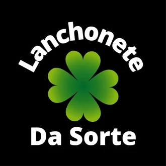
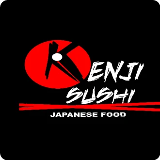
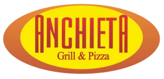

· Quem Somos ·
Segurança para os alimentos.
Tranquilidade para o
seu negócio.
Conhecimento técnico que transforma exigências sanitárias em processos mais seguros e eficientes.
A Nutri Assessoria acompanha empresas do setor de alimentação na adequação às normas, organização dos processos e construção de uma rotina segura para clientes, equipes e para o próprio negócio.
Conheça· Selo de Qualidade Nutri Assessoria ·
Mais do que um selo,
um compromisso com
a segurança dos alimentos.
O Selo de Qualidade Nutri Assessoria identifica estabelecimentos que contam com nosso acompanhamento técnico, com foco em boas práticas, segurança dos alimentos, orientação das equipes e controle dos processos.
- Saúde
- Conformidade
- Confiança

Soluções
Da prevenção à adequação, cuidamos dos detalhes que fazem
a diferença diante da Vigilância Sanitária.
· Onde Atuamos ·
Segurança dos alimentos
em diferentes tipos
de operação.
Atendemos negócios que precisam manter qualidade, organização e conformidade sanitária no dia a dia.
A Nutri Assessoria atua junto a empresas e serviços de alimentação de diferentes portes e segmentos, adaptando cada projeto à realidade da operação.
Restaurantes | Bares | Padarias | Cafeterias |
Cozinhas industriais | Mercados | Escolas | Empresas |
Eventos | Serviços de alimentação
· Depoimentos ·
Quem trabalha com alimentos
precisa de confiança.
O diferencial da Nutri Assessoria é o acompanhamento próximo e prático. Não apenas aponta os problemas, mas orienta a equipe e ajuda a encontrar soluções. O principal resultado é ter um estabelecimento mais organizado, seguro e preparado para a Vigilância Sanitária.
Restaurante Rancho do Cupim – Sorocaba/SP
· Parceiros ·
Empresas que confiam
no nosso trabalho.
Relacionamentos construídos com técnica, proximidade
e compromisso com a segurança dos alimentos.



